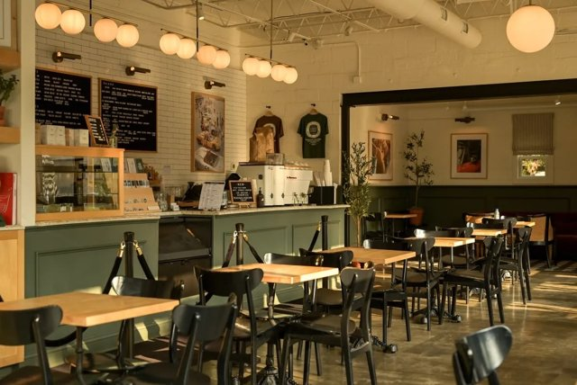

Coffe Saray
Lokasi: Yogyakarta
Suasana: Hangat dan santai
Rating: 4.5
Berikut beberapa rekomendasi tempat ngopi yang nyaman untuk belajar, santai, dan bermain dengan teman.
Lokasi: Yogyakarta
Suasana: Hangat dan santai
Rating: 4.5
Lokasi: Yogyakarta
Suasana: Modern dan artsy
Rating: 4.5
Lokasi: Taman Siswa
Suasana: Cozy dan sederhana
Rating: 4.5
Lokasi: Yogyakarta
Suasana: Minimalis dan homey
Rating: 4.4
Lokasi: Yogyakarta
Suasana: Santai dan casual
Rating: 4.3

Sebelum memilih tempat ngopi di Yogyakarta, pertimbangkan beberapa hal berikut agar tempat yang dipilih sesuai dengan kebutuhan dan aktivitas yang akan dilakukan.
Bagikan tempat ngopi favorit kamu dengan mengisi form rekomendasi.